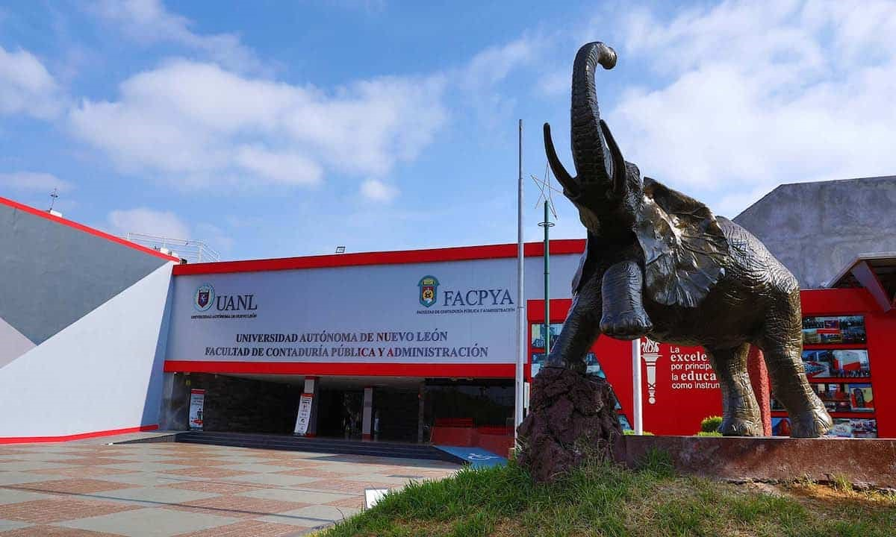
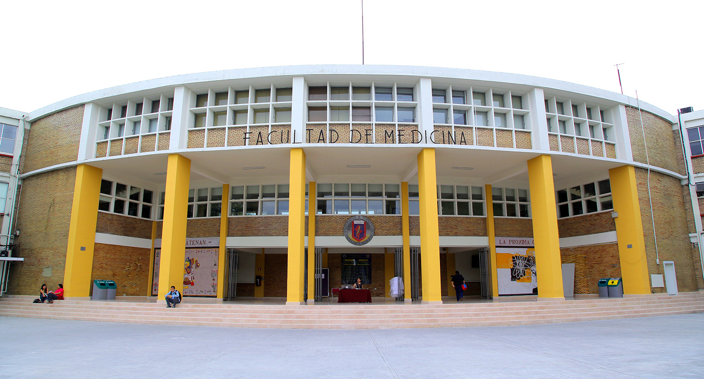

La Facultad de
Ingeniería Mecánica y Eléctrica,
es una Institución educativa de nivel superior y pertenece
a la Universidad Autónoma de Nuevo León.
Nuestras 11 carreras a nivel Licenciatura, 25 programas de Posgrado y más de 120 cursos de
Educación
Continua que satisfacen los requerimientos y necesidades del estudiante y de la industria. La
FIME
cuenta con una planta aproximada de más de 660 maestros, de los cuales, algunos cuentan con
perfil
PRODEP, otros pertenecen al SNI (Sistema Nacional de Investigadores), varios de ellos con
reconocimientos, premios y certificaciones en diferentes áreas.

La ceremonia de inauguración se celebró en el Aula Magna del Colegio Civil, siendo Presidente de la República el C. Adolfo Ruíz Cortínes, Gobernador del Estado, Dr. Ignacio Morones Prieto, y Rector de la Universidad, el Lic. Raúl Rangel Frias.

El departamento clínico de la Facultad de Medicina es el Hospital Universitario doctor “José Eleuterio González”, un nosocomio de tercer nivel de atención con 868 camas. La facultad y el hospital como unidad, y en sus diferentes edificios, están constituidos por 62 departamentos y servicios médicos y es una de las instituciones académicas de salud más grandes de México
